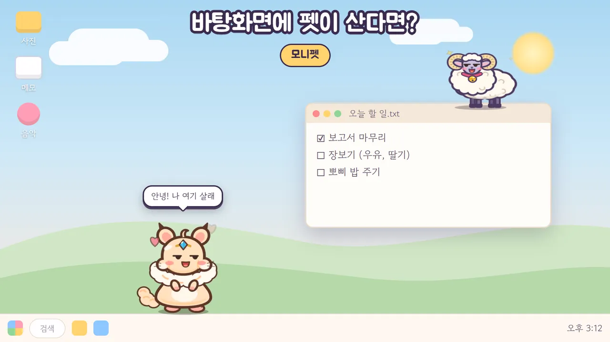

바탕화면에 사는 작은 친구
일하는 동안 펫이 작업표시줄 위를 걷고, 창 위에서 쉬고, 화면을 깨고 나온 몬스터와 싸워요. 컴퓨터를 끄고 나갈 땐 폰으로 데려가 마당에서 함께 지내요.
배고프면 밥을 달라고 해요. 크기는 다섯 단계로 줄일 수 있고, 집중할 땐 방해 금지를 켜면 몬스터도 쉬어요.
펫이 스킬로 알아서 싸워요. 가끔은 왕관 쓴 보스도 나와요. 펫을 들고 버티면… 그물 바주카를 쏴요!
밖에서도 밥 주고 놀아 줘요. 친구에게 코드를 알려 주면 함께 큰 보스에 도전해요.
에픽 · 전설 · 신화 알은 저마다의 이야기를 들려줘요. 116종을 도감에 모아 보세요.
머리 장식, 발자국, 곁을 맴도는 꼬마 친구, 말풍선까지. 내 펫만의 모습으로 꾸며요.
폰과 PC 어디에서 시작해도 돼요. 둘 다 깔면 같은 계정으로 펫이 오가며 지내요.
Windows 10 · 11 · 무료
파란 경고 창이 뜨면? PC 설치 안내를 봐 주세요.
곧 정식 출시 · 지금은 초대받은 테스터만 받을 수 있어요.
아이폰 · Mac은 아직 지원하지 않아요. 모니펫은 만 14세 이상만 이용할 수 있어요.
네, 내려받기와 플레이는 무료예요. 원할 때만 보는 보상 광고가 있어요.
모니펫은 만 14세 이상만 이용할 수 있어요. 처음 시작할 때 확인해요.
펫 크기를 다섯 단계로 줄일 수 있어요. 집중해야 할 땐 방해 금지를 켜면 몬스터도 쳐들어오지 않고 쉬어요.
네, 하나만 있어도 즐길 수 있어요. 둘 다 같은 계정으로 로그인하면 펫을 PC와 폰 사이로 데려갈 수 있어요. 펫은 언제나 한 곳에만 있어요 — PC, 폰, 또는 친구 집에 놀러 가 있거나.
새로 나온 프로그램이라 Windows가 한 번 더 묻는 거예요. [추가 정보] → [실행]을 누르면 돼요. 자세한 건 PC 설치 안내를 봐 주세요.
지금은 Windows PC와 Android 폰만 지원해요.
개인정보처리방침에 모은 정보와 보관 기간을 적어 두었어요. 계정과 데이터 삭제는 계정 삭제 안내를 따라 하면 돼요.